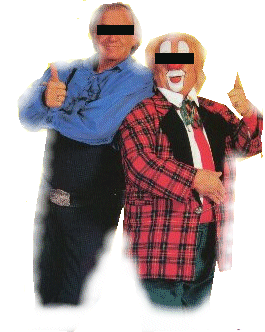

THIS SERVER WAS HACKED BY BAS AND AAD
Bas en Aad, en de zoektocht naar security

Aflevering 1
De stop in Danville
Dag vriendjes en vriendinnetjes,
Tja, Adriaan en ik hebben de afgelopen week even
niks van ons laten horen.
Dit kwam doordat wij druk bezig waren met ons nieuwe avontuur.
Dit keer gaan we niet op zoek naar een schat,
maar op zoek naar goed beveiligde servers.
Hiervoor moeten we waarschijnlijk weer heel de wereld rond,
maar nu niet met de boot, trein, auto of vliegtuig, maar via internet.
Ook B2 zal ons geen last meer bezorgen,
maar we zullen onderweg wel andere stoute mensen tegenkomen.
Zoheb je bijvoorbeeld de Canadese overheid en de CIA,
maar ook in Nederland zijn er nog echte, domme slechterikken.
We zullen wel zien waar ons cyber-schip strand.
Natuurlijk mogen jullie allemaal onze reis volgen.
Vandaag zijn we geland voor de eerste aflevering van ons
nieuwe avontuur in het stadje
Danville, California
in de U.S.A. Het is vlakbij Walnut Creek.
Ik, Bassie vind het hier maar niks.
Je kan hier niet eens appeltaart met slagroom bestellen.
Adriaan vermaakt zich hier wel uitstekend. Hij gaat altijd met
lelijke vrouwen mee, die toevallig ook allemaal dezelfde naam hebben : Hooker.
Was die naam van die Nederlandse, geweldige zangeres nou Sugar Lee Hooker ?
Zou kunnen, want ze lijken allemaal op haar.
Alleen zetten die lelijke snollen die Adriaan hier heeft wel een pruik op.
De mensen zijn hier wel erg vriendelijk.
Ik kan gelukkig ook een beetje met ze praten, doordat Adriaan mij Engels heeft geleerd.
En ze doen hier aan professioneel-watjes-blaas-voetbal.
Je kent dat spelletje toch wel, waarbij je het watje in de
goal van je tegenstander moet blazen ?
Dat doe ik normaal altijd met Adriaan op de camping,
maar dan wint hij altijd. Maar dan noemt hij mij toch 'Het watje van de week'.
Nou, hier bieden ze me regelmatig aan om dat spel als werk te gaan doen.
Er is al zeker acht keer iemand naar me toe gekomen om te vragen of
ik een blow-job wou hebben. Aardig he ?
Als ik ze goed begrijp krijg ik dan dertig dollar per uur betaald.
Maar daar kan ik niks mee, want ze hebben hier nergens appeltaart met slagroom.
Maar ik weet nu eindelijk wat American-football is.
Zo hebben we weer wat geleerd, maar we hebben hier zoals je ziet
nog geen goede security gevonden.
Maar we geven niet, we gaan gewoon verder zoeken.
De groeten uit Danville van Bas en Aad !!!
Dag vriendjes, dag vriendinnetjes, tot de volgende hack maar weer........
THIS SERVER WAS HACKED BY BAS AND AAD
contact Bas en Aad : basenaad@most-wanted.com
Grtx: all the people in Danville, Xoloth1, Meestervervalser,
DrMouse,PhreaKING, Mr A., Nikketaal, Bivak, CoolVibe,
M0f0, Backmasker,Enix, Acos and the Dutch Threat Crew,
SZCF, PhreaKING, Mr A., and everybody else supporting our ass.
Oh, we got the old pages backed up as index.bak.
And Canada: we don't mean this in a offensive way,
we are NO spies, NO crackers, NO enemy of the state: we just want to show you how
fucked up security is nowadays..
After all, i'm just a clown !